GPS 기반 스마트 터널
미등 자동제어 시스템
터널 진입 블랙홀 현상 해결 프로젝트
박성준 (팀장) | 김수영 | 김인현 | 이승주 | 이채욱
발표일: 26.06.04
팀원 역할 분담
박성준
• 시스템 설계
• 개발 일정 관리
김수영
• 센서 제어 로직
• 코드 최적화
김인현
• LED 구동 드라이버
• 하드웨어 통합
이승주
• 가속도 데이터 매칭
• 오차 보정 필터
이채욱
• 모듈 배선 설계
• 실차 통합 테스트
목차
- 01 프로젝트 개요 (PIEV 모델)
- 02 주요 구성 소자 (Components)
- 03 하드웨어 회로도 (Schematic)
- 04 센서 보정 및 발전 과정 (GPS / IMU)
- 05 조도 센서 듀얼 임계값 설계
- 06 센서 보정 전후 결과 지표
- 07 임베디드 소스코드 핵심 분석
- 08 가상 터널 설정 및 실구현 상태
- 09 CAN 통신 분석 및 시도 결과
- 10 법적 규제 검토 & 특허/공모전
프로젝트 개요
기존 문제점
대시보드 조도 센서 의존의 한계
- 터널 진입 시 급격한 조도 변화 발생
- 센서 감지 및 미등 점등까지 3~5초의 지연(암흑 상태) 발생
- 시야 미확보로 인한 운전자의 심리적 공포 및 후방 추돌 위험 증대
PIEV 핵심 모델
- P (인지 / Perception): GPS 위치 인지 및 자이로 가속도 차량 상태 감지
- I (판단 / Intellection): ESP32 제어기를 통해 터널 진입 전 "점등 필수" 판단
- E (감정 / Emotion): 진입 시 암흑 공포 완벽 해소
- V (실행 / Volition): MOSFET 스위칭으로 0초 만에 미등 즉시 구동
주요 부품 및 소자 구성
| 부품명 | 선정 모델 | 핵심 기술 및 발표 설명 |
|---|---|---|
| 메인 MCU | ESP32 devkit v4 | 센서 데이터 고속 병렬 연산 및 다채널 PWM 신호 송출 제어 |
| GPS 모듈 | NEO-M8N | 터널 위치 감지용 위성 데이터 수집 및 차선급 정밀 탐색 |
| 가속도 센서 | MPU6050 자이로 | 차량의 실제 움직임 판별 및 센서 퓨전 노이즈 보정용 데이터 획득 |
| 조도 센서 | BH1750 (I2C) | 야간 주행 상태 검출 및 채터링 방지 듀얼 기준 조도 측정 |
| 기타 IC 소자 | Buck Converter / TC4427 | 12V 차량 전원 감압 및 MOSFET 고속 스위칭 드라이버 구동 |
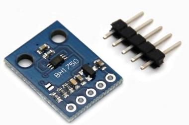
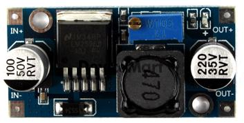
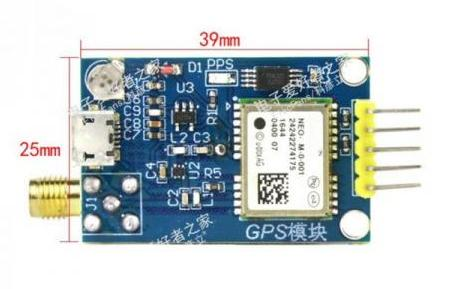
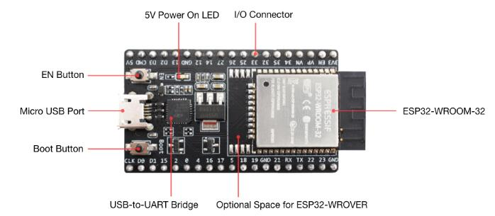
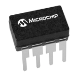
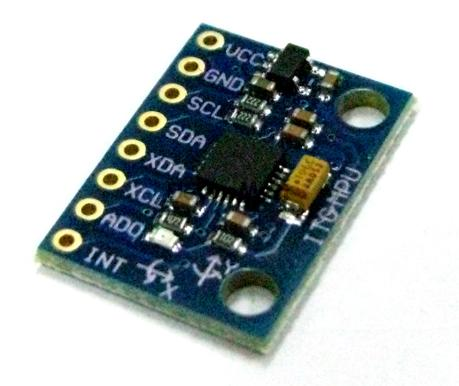
시스템 하드웨어 회로도
- LED 스트립 구동부: 12V 차량 전원 배선을 직접 스위칭 제어하도록 설계
- Buck Converter: 차량용 12V 전압을 5V로 감압하여 안전한 MCU 전원 공급
- 게이트 드라이버(TC4427): 고주파 5kHz PWM 신호 변환 및 MOSFET 전압 스위칭 보호
- 센서 입력단 (I2C/UART): BH1750(조도), MPU6050(가속도), GPS가 통합된 복합 데이터 구조
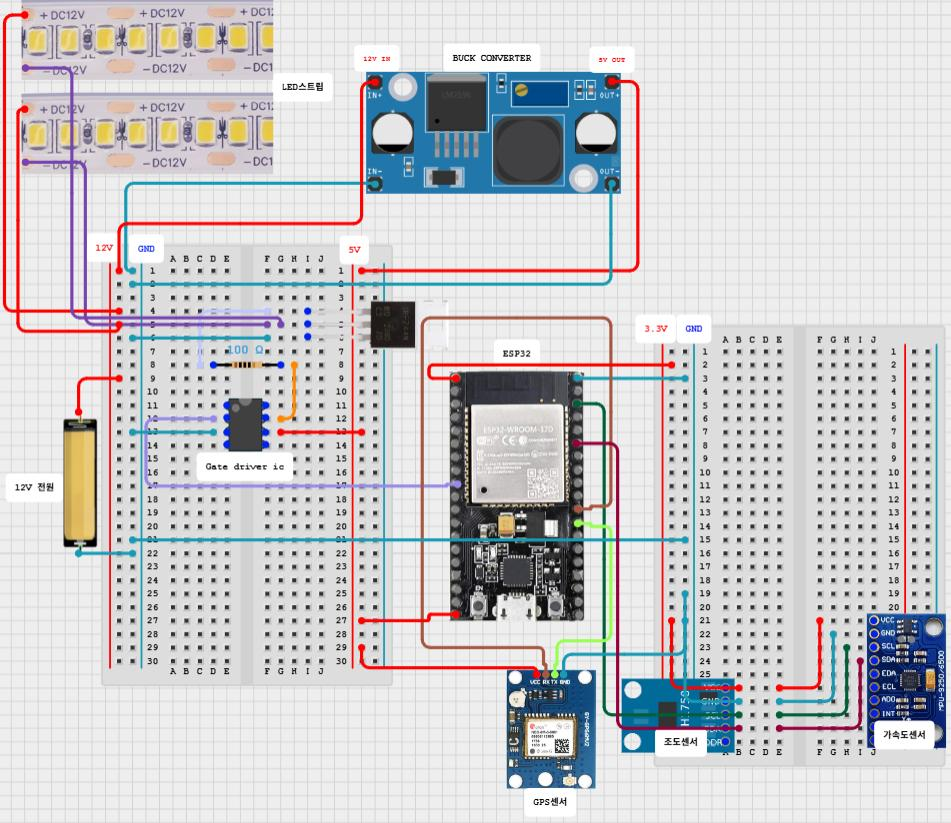
발전 과정: 1. GPS 단독 적용의 한계
❌ 정지 시 위치 드리프트 발생
위성 수 6개 기준 수신 환경에서 정지 상태일 때도 좌표가 계속 미세하게 변형되어 움직이는 것으로 오인하는 드리프트 현상 발생.
📊 측정 오차 분포
- 그린필드 기준 정지 상태: 5m 내외의 원형 오차
- 주행 이동 상태: 수신 불안정 시 최대 20m 이상의 궤적 튐
- 실내 테스트 시 위성수 부족으로 GPS 수신 차단
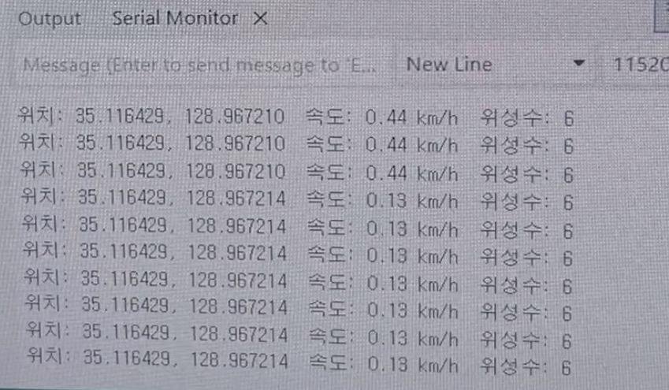
발전 과정: 2. GPS + 자이로/가속도 센서 퓨전
1) 가속도 정적 오프셋(보정치) 적용
자이로/가속도 센서 자체의 정적 제조 오차가 상시 주행 신호로 잡혀 오독함.
- 정지 상태에서 데이터 평균 수집 ➔ Calibration 오프셋 상수 도출
- BIAS_X(2.47), BIAS_Y(-1.53), BIAS_Z(1.19)를 적용하여 정지 시 영점 보정
2) 주행 상태 필터링 (Motion Filter)
중력가속도를 제외한 차량의 순수 움직임 크기(motionMag)를 기하학적으로 연산.
- 합성 수식: $\sqrt{X^2 + Y^2 + Z^2}$ 결과에서 중력(9.8) 상쇄
- 임계값(0.6) 이상 진동 시에만 '주행 중(isMoving=true)'으로 판정
- 정지 시 GPS 신호 무시 및 10차 이동평균 필터 갱신 차단
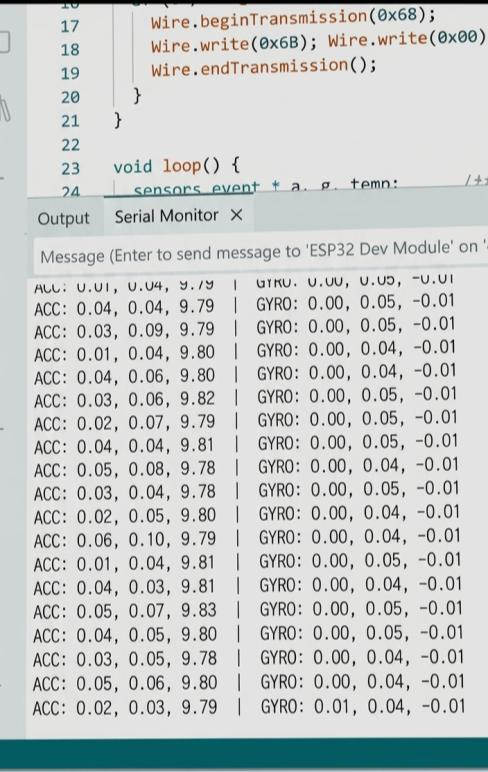
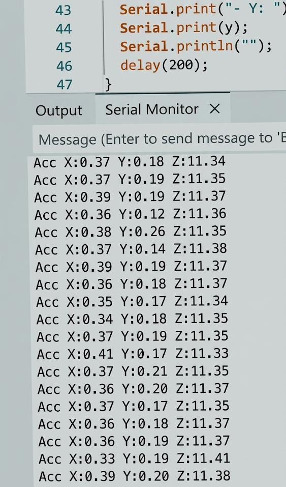
조도 센서 밤낮 구분 및 채터링 방지
⚠️ 경계부 시스템 채터링 해결
조도 기준값(임계값)을 단일값으로 지정할 경우, 그늘이나 경계 영역에서 조도값이 조금만 흔들려도 미등이 켜졌다 꺼지는 채터링(Chattering) 현상 발생.
- 해결책: 듀얼 임계값(Hysteresis) 설계
- 낮 판별: 조도 3500 이상 2초 유지 시 낮으로 전환
- 밤 판별: 조도 500 이하 2초 유지 시 밤으로 전환
☀️ 주변 환경별 BH1750 측정 지표
- 맑은 낮 실외: 약 50,000 lx
- 그늘진 실외 / 흐린 날: 약 3,000 lx
- 터널 실내 / 완전 차단: 약 10~50 lx
- 형광등 실내: 약 600 lx (밤 모드 기준 500lx와 유사하므로 실내 작동 최적화)
센서 보정 전후 성능 비교 결과
- 안테나 강도 감시 및 10차 이동평균 필터 연동
- 위치 오차 반경 약 92% 감소로 터널 진입차선 완벽 필터링
- 부팅 초기 500샘플 캘리브레이션 자동화
- 중력 가속도 오프셋 자동 상쇄 및 누적 드리프트 99% 이상 제거
- 주야간 이중 필터 시간 지연 비교기 구성
- 채터링 현상 완전 제거로 릴레이 및 회로 내구수명 연장
- 300m 전부터 점진적 디밍 스위칭 연동
- 터널 입구 진입 전 100% 미등 점등 완료로 완벽한 시야 확보
ESP32 임베디드 핵심 소스코드
// [Sector 1] 변수 선언 및 타겟 설정
const double TARGET_LAT = 35.105925; // 부산 대티터널 위도
const double TARGET_LNG = 129.007105; // 부산 대티터널 경도
// 센서별 정적 오프셋 보정값 (Calibration Bias)
const float BIAS_X = 2.47;
const float BIAS_Y = -1.53;
const float BIAS_Z = 1.19;
// 밤 감지 임계값 (Hysteresis 밤 판별)
const float NIGHT_LIMIT = 500.0;
void setup() {
Serial.begin(115200);
Wire.begin(21, 22);
lightMeter.begin(); // BH1750 조도센서 초기화
if (mpu.begin()) {
mpuReady = true;
Serial.println("가속도 센서(MPU6050) 필터링 준비 완료");
}
}
// [Sector 2] 가속도 기반 정적 필터링
sensors_event_t a, g, temp;
mpu.getEvent(&a, &g, &temp);
float adjX = a.acceleration.x - BIAS_X;
float adjY = a.acceleration.y - BIAS_Y;
float adjZ = a.acceleration.z - BIAS_Z;
// 중력을 상쇄한 순수 차량 움직임 크기 연산
float motionMag = sqrt(adjX*adjX + adjY*adjY + (adjZ - 9.8)*(adjZ - 9.8));
isMoving = (motionMag > 0.6); // 움직임 감계값 지정
// [Sector 3] GPS 융합 필터링
if (gps.location.isValid() && gps.satellites.value() >= 4) {
double rawLat = gps.location.lat();
double rawLng = gps.location.lng();
if (isMoving) {
// 주행 중일 때만 좌표 버퍼에 기록 및 10차 이동 평균 필터 갱신
latBuffer[bufIdx] = rawLat;
lngBuffer[bufIdx] = rawLng;
bufIdx = (bufIdx + 1) % AVG_SIZE;
// ... 이동평균 연산 수행
}
}
// [Sector 4] 조건 분리형 스마트 미등 제어 (거리별 디밍 제어)
float lux = lightMeter.readLightLevel();
int brightness = 0;
if (lux <= NIGHT_LIMIT) {
brightness = 255; // 야간에는 상시 100% 점등
} else {
if (!firstFix || distanceToTarget >= 300.0) {
brightness = 0; // 터널 300m 전에는 소등 상태 유지
} else if (distanceToTarget < 300.0 && distanceToTarget > 45.0) {
// 300m ~ 45m 구간: 거리가 가까워질수록 밝기 선형 증가 (디밍)
brightness = (int)((300.0 - distanceToTarget) * (255.0 / (300.0 - 45.0)));
} else if (distanceToTarget <= 45.0) {
brightness = 255; // 진입 전 45m 지점부터 100% 밝기 유지
}
}
// [Sector 5] PWM 하드웨어 드라이빙 출력
brightness = constrain(brightness, 0, 255);
ledcWrite(ledPin, brightness); // PWM 5kHz 주파수로 MOSFET 트리거링
가상 실험 환경 및 최종 구현 상태
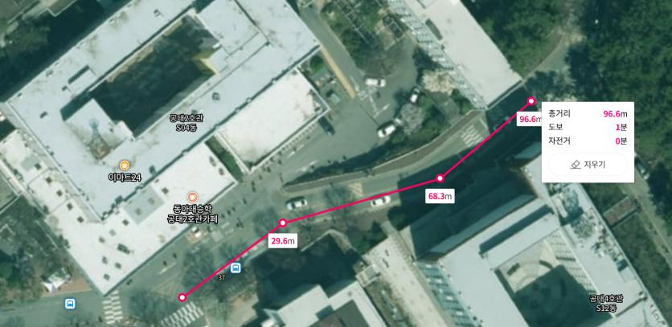
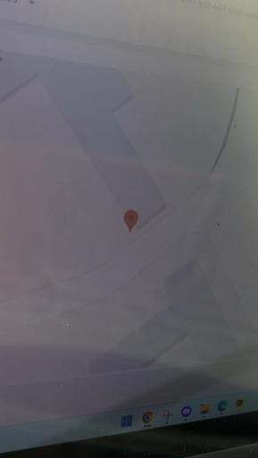
CAN 통신 제어 시도 및 분석
1) B-CAN (Body CAN) 제어 원리
바디 전장 시스템(미등/헤드라이트, 도어록, 와이퍼 등)을 제어하기 위한 차량 내 통신 규격.
- 꼬임선(Twisted Pair: CAN_High, CAN_Low) 구조
- 노이즈 방지를 위해 차동 전압(Differential Voltage) 사용
2) SGW (보안 게이트웨이) 방화벽의 한계
테스트 차량인 아반떼 CN7 22년식 기준, OBD2 포트를 통한 패킷 주입 실패.
- 차량 보안(해킹 방지)을 위해 보안 게이트웨이(SGW) 방화벽 탑재
- 진단 도구 접속 시 신호 필터링 차단
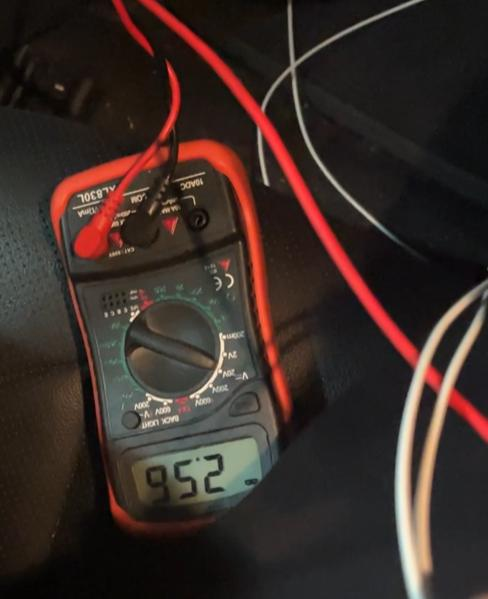
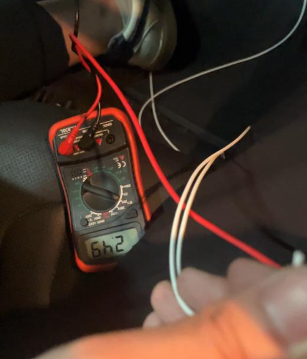
CAN 통신 제어 실험 성공 및 한계 극복
T-tap 수신 및 데이터 필터링
- 정션박스 다이렉트 탭을 통해 총 33개의 활성 CAN ID 수신
- 라이트 레버 조작 시 변동 데이터 추적 ➔ ID 0x168 변동 감지
- 미등 OFF: 0x01 (이진수: 0000 0001) / 미등 ON: 0x89 (이진수: 1000 1001)
명령 주입 충돌 및 ICU 에러 처리
- 순정 BCM이 주간에 10~20ms 주기로 '미등 OFF' 패킷 전송 중
- ESP32 모듈이 5ms 간격으로 '미등 ON' 패킷을 주입
- 비트 충돌로 전압 감쇄 발생 ➔ ICU가 Bit Error(통신 에러)로 판정하여 보호 모드 전환
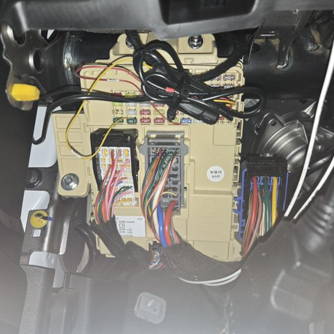
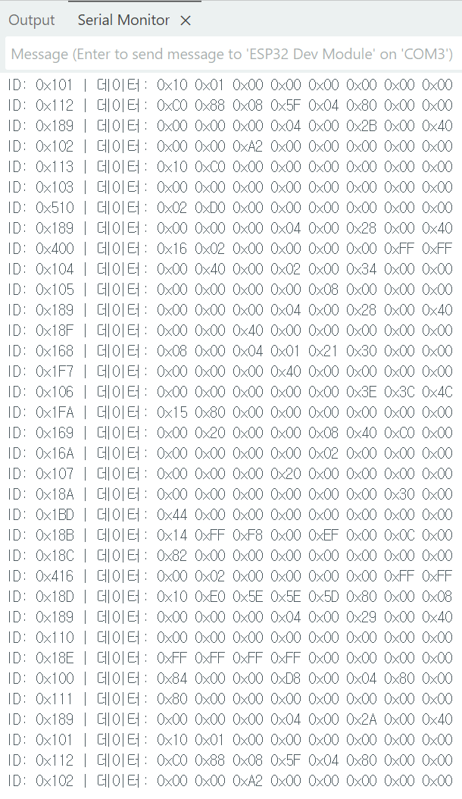
자동 제어 법규 및 구현 타당성
⚖️ 자동 점등의 법규 부합성
법규 기준 내 자동 제어 설계 조건 검토 결과: **합법 범위 충족**
- 켜져야 할 상황(어두운 조도, 터널)에서 미등이 임의로 꺼지지 않는 안전 장치 충족
- 규정된 자동차의 최소 광도 기준을 훼손하지 않고 100% 광량 출력
- 자동 모드 사용 중 운전자가 안전 확보용 수동 조작을 방해받지 않는 독립 제어 구조
🛠️ 전장 회로 사양 및 구현 조건
디밍 구현을 위한 물리적 전장 한계 분석
- 미등의 밝기 디밍 제어 표준은 현재 PWM(펄스폭 변조)이 전 세계 규격
- 하드웨어가 없는 차량의 경우: BCM에 전용 PWM 스위칭 핀이나 기판 동선 라인이 누락됨
- 따라서 단순 펌웨어 업데이트만으로는 불가능하며, 본 프로젝트에서 설계한 외부 MOSFET 제어 모듈 및 배선 하드웨어가 필수적임을 증빙
특허 출원 & 공모전 추진 현황
🔐 지식재산권 특허 가출원
명칭: 터널사고 방지를 위한 미등제어 시스템
- 특허고객번호 및 출원번호 접수 완료
- 특허법 시행규칙 제21조에 의거한 정식 특허 명세서 임시 첨부 출원 심사 중
🏆 교통·모빌리티·항공 분야 공모전
주제: ITS 및 자율주행 안전 신기술 제안
- 국민 편익 및 안전 파급효과(40점), 창의성(30점), 실현가능성(30점) 평가
- 6~7월 중 최종 선정 예정 및 자료 평가 심사 진행 중
결론 및 향후 계획 & 질의응답
📌 핵심 결론 및 향후 계획
- 정밀 센서 융합: GPS 정지 드리프트 99% 억제 및 ±1.2m 정밀도 확보
- 하드웨어 한계 극복: SGW 보안 장벽을 우회하기 위해 MOSFET PWM 직접 회로를 구현하여 안정적으로 디밍 스위칭 성공
- 향후 개발 방안: 실차 보드 패키징(소형 ECU 설계) 및 차량 공공데이터 포털 기반 전국의 터널 DB 맵 매칭 자동 연동 추진
🙋 Q & A (질의응답)
- GPS 드리프트 오차 보정 메커니즘
- 자이로 MPU6050 오프셋 캘리브레이션
- MOSFET PWM 디밍 및 TC4427 회로의 안정성
- CAN 통신 패킷 충돌 현상과 우회 배선 경로